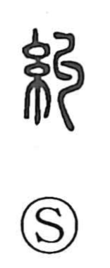

糾

Uncategorized
Kun: azanau, tadasu | On: kyu
twist together ・ gather ・ investigate
Explanation
Shirakawa explains 糾 as a phono‑semantic graph: the silk radical evokes threads, while the accompanying element sketches strands twisted into a rope, yielding the on reading kyu. From the image of twisting and gathering fibers comes the sense of bringing things or people together, and, when the gathering is botched, of entanglement and complication. Because a rope also serves to seize and bind wrongdoers, the character further develops the meaning of probing and holding to account—inquiring into facts and pressing responsibility.